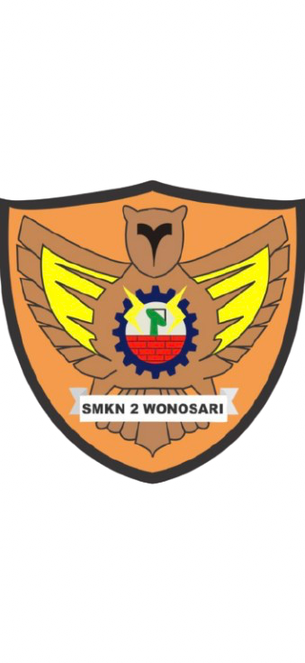
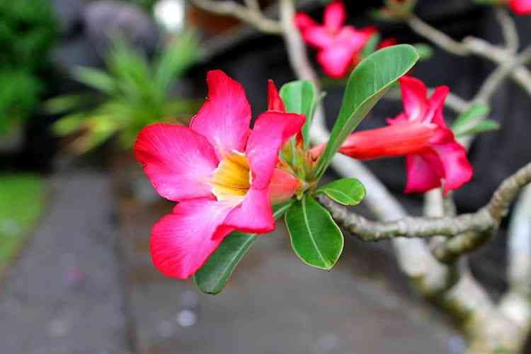

Kelas X TPFL

Plumeria alba
Bunga Kamboja
Plumeria alba
29 Juli 2026
Program ASRI (Aman, Sehat, Resik, dan Indah) bertujuan menciptakan lingkungan sekolah yang bersih, hijau, sehat, aman, dan nyaman melalui kegiatan penghijauan dan perawatan tanaman.
"Merawat Kamboja, Menjaga ASRI."